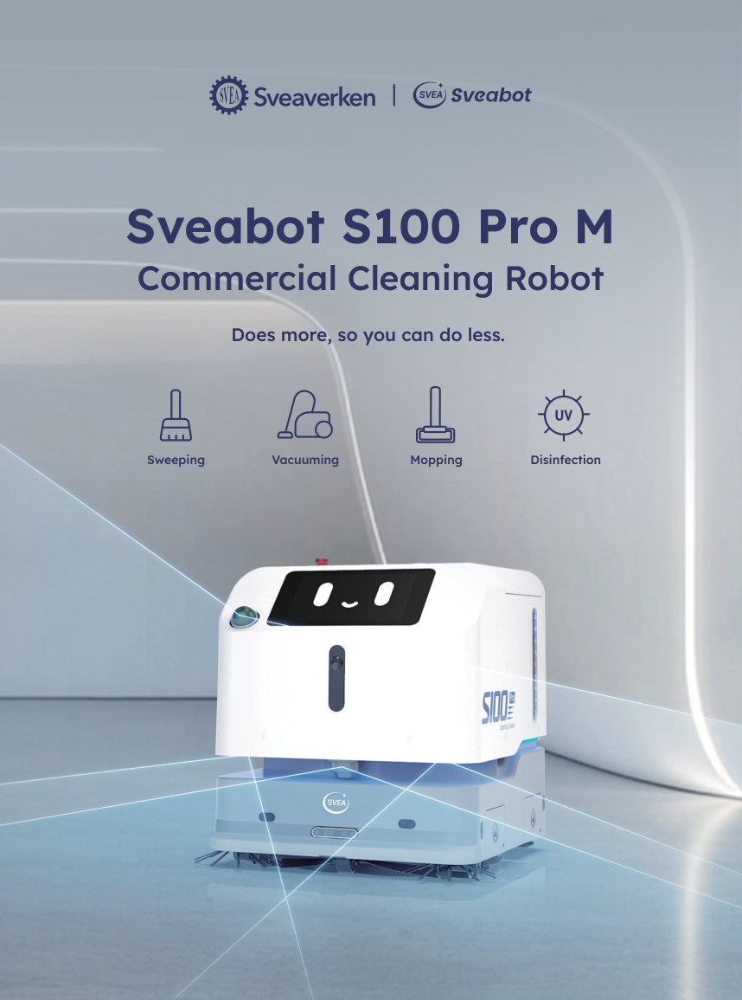

One coordinated pass
Sweep, vacuum and mop together for routine dust, small debris and floor marks. Cleaning settings are matched to the surface and operating conditions.
A proposed daily floor-care solution using the Sveabot S100 Pro M. Combine sweeping, vacuuming and wet mopping with scheduled operation and remote oversight.
Watch it in action ↗Explore the proposalPrepared by FJ Dynamics International Limited
Solution concept for evaluation · S100 Pro M

Support repetitive cleaning across suitable lobbies, corridors and common areas, while staff retain control of site preparation, water servicing and exceptions.
Sweep, vacuum and mop together for routine dust, small debris and floor marks. Cleaning settings are matched to the surface and operating conditions.
3D LiDAR and vision-based sensing support mapping and obstacle awareness. Routes and operating areas are established through an on-site assessment.
Schedule tasks remotely, monitor cleaning progress, review reports and manage robots through the app. Automatic recharging supports the daily routine.
*Manufacturer-rated performance is not a site guarantee. Effective productivity depends on layout, pedestrian traffic, cleaning settings and service interruptions.
The manufacturer's Shui Chuen O Plaza case study describes two S100 Pro M robots, with one assigned to each of two floors, carrying out scheduled sweeping-and-mopping routines.
This provides a relevant shared-space reference for the proposed approach. Plaza results are not a performance guarantee for residential corridors.
Read the manufacturer's case study ↗Published manufacturer account; not an independent acceptance test or evidence of automatic inter-robot dispatch.
Brand-published footage of the robot working in a Hong Kong community shopping environment.
Watch on LinkedIn ↗An official event showcase connecting Sveabot cleaning robots with public-housing applications. This is exhibition footage, not a site acceptance test.
Watch on YouTube ↗Confirm clear widths, turning space, floor finish, pedestrian patterns and charging locations.
Define zones and routes. Assign each robot a floor or corridor section; agree how staff will transfer robots between floors.
Run scheduled cleaning windows. Staff handle water changes, consumable care and operational exceptions.
Review coverage, cleaning quality and effective productivity during a representative site demonstration.
S100 Pro M is proposed for sweep–vacuum–mop maintenance. The following points distinguish documented product capabilities from items requiring confirmation.
| Requirement | Proposed response | Assessment |
|---|---|---|
| Autonomous cleaning and route planning | Mapped operation with LiDAR, vision sensing and obstacle detection. | DOCUMENTED |
| ≥10 L clean / wastewater tanks | 12.5 L capacity for each tank. | DOCUMENTED |
| ≥350 m²/h | Rated at 1,000 m²/h; verify effective performance at the proposed site. | SITE VALIDATION |
| Remote scheduling, monitoring and reporting | App-based scheduling, progress monitoring, reports and fleet management. | DOCUMENTED |
| Automatic charging | Automatic recharge is listed in the product specification. | DOCUMENTED |
| Scrubbing and water suction / drying | The M model is documented as a wet-mopping solution. Acceptance as an alternative to scrubbing and water extraction must be agreed. | SCOPE CLARIFICATION |
| 0.5 L dust collection and assisted handle | Confirm the exact S100 Pro M configuration and supporting manual before declaring compliance. | MODEL CONFIRMATION |
| Multi-robot floor-by-floor coordination | Propose assigned zones / floors. Automatic task allocation and lift integration require a separate technical confirmation. | TECHNICAL REVIEW |
| Narrow corridors and pedestrian traffic | Assess actual passage width, turning space, thresholds and pedestrian behaviour. | SITE VALIDATION |
Cleaning acceptance criteria, operating hours, robot quantity, floor-transfer arrangements, site safety setup, connectivity, service coverage and commercial terms. This concept does not specify a price, contract duration or a guaranteed outcome.
Discuss the site and agree a representative demonstration.
FJ Dynamics International Limited
Contact Cooper ↗Specifications are based on manufacturer materials. Final hardware, software options and deployment scope are subject to confirmation.